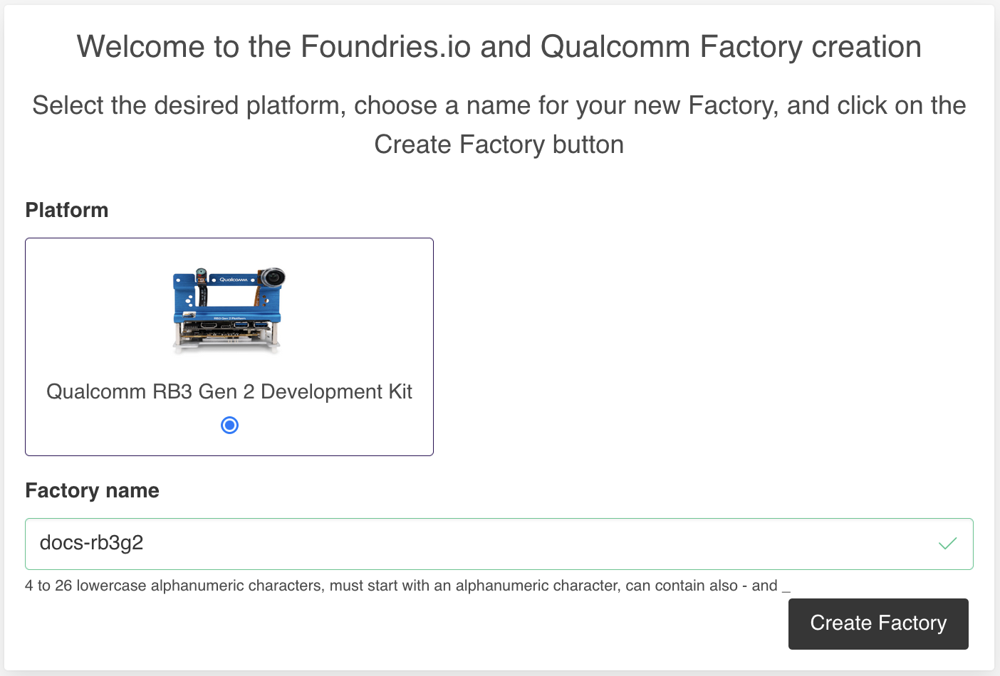

Quick Start Guide#
Unlock the potential of your IoT and Edge device development with the powerful partnership of Qualcomm and Foundries.io! Our comprehensive end-to-end DevSecOps platform is designed for embedded developers like you, helping your projects to be efficient, more secure, and scalable.
This guide covers everything from creating your Factory, to flashing, booting, and testing your AI applications.
Table of Contents#
Document Revision History#
Version |
Date |
Comments |
|---|---|---|
v0.1 |
2024-07-01 |
Initial release |
v0.2 |
2025-03-10 |
Adding pictures and videos |
Definitions, Acronyms, and Abbreviations#
Variable |
Meaning |
|---|---|
|
Your Factory name |
|
Device name used when you registered the device |
|
Docker-compose app available to run on the device |
|
The branch you want your device to follow |
|
Device IP |
Getting Started#
Access the link below and follow the instructions to sign up and create your Factory. https://app.foundries.io/factories/+/qualcomm
Create an Account#
Create a new account if you do not have one, or continue with your existing Github or Google account.

Create a Factory#
Select the platform *
Name your Factory
Click the Create Factory button
* If you want to try FoundriesFactory on a different Qualcomm platform, create the Factory as suggested for Qualcomm RB3 Gen 2 Development Kit and contact Foundries.io at contact@foundries.io.
{kind=link}
NOTE: Based on the selected platform, the <machine-name> changes as shown in the table below:
Device Name |
|
|---|---|
Qualcomm RB3 Gen 2 |
|
Members Tab#
The Factory owners may invite additional users to their account via email under the “Members” tab of the Factory interface.
- Manage your Factory users: https://app.foundries.io/factories/<factory>/members/
Fioctl Installation#
Fioctl™ is a simple tool for interacting with the Foundries.io™ REST API.
Configure git#
After Fioctl is properly setup, use its Git credential helper to allow pushing to your repos with FoundriesFactory.
Note: On macOS, you may encounter authentication issues due to Git on OSX using the Keychain Access Utility. The solution is to remove Keychain Access entries from your git config file.
Qualcomm Robotics RB3G2 Development Kit#
Once creating your Factory, it will build the source code for the RB3G2 and produce a Target. A Target is a over-the-air update that can provide the build artifacts for initial provisioning.
Navigate To the Targets Section of Your Factory Click the latest Targets with the platform-main trigger.
{kind=link}
Expand the run in the Runs section and download the Factory image.
lmp-factory-image-qcs6490-rb3gen2-vision-kit.qcomflash.tar.gz

Extract the
tar.gz.Open a terminal and change the directory into
lmp-factory-image-qcm6490.The compressed archive contains the flashing tool
qdl.Note: The tool from the build has the interpreter set incorrectly.
Download and compile qdl for your platform:
git clone https://github.com/linux-msm/qdlRead the README and install build dependencies
cd qdlmake
Disable ModemManager on some host systems if necessary.
Now configure the Qualcomm® Robotics RB3G2 Development Kit:
Set up
DIP_SW_0positions 1 and 2 toON. This enables serial output to the debug port.Connect the USB debug cable to the host. Baud rate is 115200.
You can use your favorite UART client to access the console, such as minicom, putty etc.
The serial connection is based on the FTDI chip:
/dev/serial/by-id/usb-FTDI_FT230X_Basic_UART_<serial ID>-if00-port0
Plug in the USB-C cable from the host.
Run the command to flash:
./qdl --debug prog_firehose_ddr.elf rawprogram*.xml patch*.xml
Press and hold the F_DL button and connect the power cable.
Serial Console#
After flashing, the device should boot the Linux microPlatform. Use your serial console to log in.
Username: fio
Password: fio
Connect via WiFi#
Using the WiFi radio, connect it to the internet using NetworkManager CLI:
sudo nmcli device wifi connect “<AP Name>” password “<AP password>”
The sudo password is fio.
Enabling Ethernet and USB#
In order to enable Ethernet, provide firmware in the Yocto recipe below. This is a one time operation, which will also enable the USB type A ports to function
Register and log in to https://www.renesas.com, then download firmware.
Once downloaded, copy USB3-201-202-FW-20131112.zip at recipes-firmware/firmware/renesas-upd720201 and add the renesas-upd720201 package to your image.
Add Firmware zip to the Correct Layer Location#
git clone https://source.foundries.io/factories/<factory>/meta-subscriber-overrides.git
cd meta-subscriber-overrides
mkdir -p recipes-firmware/firmware/renesas-upd720201
cp /tmp/USB3-201-202-FW-20131112.zip recipes-firmware/firmware/renesas-upd720201
echo 'FILESEXTRAPATHS:prepend := "${THISDIR}/${PN}:"' > recipes-firmware/firmware/renesas-upd720201_20131112.bbappend
echo 'SRC_URI += "file://USB3-201-202-FW-20131112.zip"' >> recipes-firmware/firmware/renesas-upd720201_20131112.bbappend
Add renesas-upd720201 to lmp-factory-image#
echo 'CORE_IMAGE_BASE_INSTALL += "renesas-upd720201"' >> recipes-samples/images/lmp-factory-image.bb
Commit and Push to Create a new Build#
git add .
git commit -s -m "renesas-upd720201: add firmware file"
git push
After you push, the FoundriesFactory will build a new target. Once built, any registered device will update over the air.
SSH#
Once connected to the network you can log in over ssh if desired:
qcs6490-rb3gen2-vision-kit.local
OR
ssh fio@<IP>
Password: fio
Register Your Device#
Developer Workflows#
Your Factory produces Targets, which are references to platform images and Docker applications.
Find your Factory source code at:
https://source.foundries.io/factories/<factory>/
Find The built Targets at:
https://app.foundries.io/factories/<factory>/targets/
Git Repositories#
ci-scripts.git: Configures your factory branches -factory-config.ymlcontainers.git: Contains the source code for your Docker applicationslmp-manifest.git: Yocto manifest for your platform buildmeta-subscriber-overrides.git: Yocto layer which overrides the Linux microPlatform
Compose Apps#
Compose Apps fill the gap for Factory devices in distributing applications.
Build your own Compose Apps.
Your Factory also has some sample Apps ready to deploy.
Qualcomm AI Hub#
Qualcomm® AI Hub simplifies deploying AI models for vision, audio, and speech applications to edge devices. You can optimize, validate, and deploy your own AI models on hosted Qualcomm platform devices within minutes.
Please see our Getting Started guide to start using a Factory with AIHub.
The applications below which have a prefix of gst-ai use the models from AIHub and have been packaged into the qimsdk-lmp image in your Factory.
If you are curious how this process works, refer to
https://source.foundries.io/<factory>/containers.git/tree/qimsdk-lmp/DockerfileShould you want to add or replace a model from AIHub, modify the
qimsdk-lmpDockerfile and add aRUNcommand to download the file into/src/models/inside the container.During runtime, the models will be placed in
/optand can be referenced in the Compose command to instruct the application to use a specific model.Please review the
gst-ai-classificationdocker-compose.ymlinhttps://source.foundries.io/<factory>/containers.gitas an example of how to run a different model.
Httpd Server App#
This is a simple httpd server, built from a Dockerfile in the Factory source code.
Enable the shellhttpd Compose App before deployment:
git clone https://source.foundries.io/factories/<factory>/containers.git
git mv shellhttpd.disabled shellhttpd
git commit -s -m “enable shellhttp” && git push
This App does not require any hardware other than a network connection.
Qualcomm IMSDK GStreamer Sample App#
This is a development container for the gstreamer applications listed below. It provides the assembled binaries, models, and video files for the applications to consume. If you want to build your own gstreamer pipeline application, this would be the place to start.
For more information, please see the project’s README.
Video Wall#
The Video wall command-line application (gst-concurrent-videoplay-composition) facilitates concurrent video decoding and playback for advanced video coding (AVC)-coded videos,
and performs composition on a display for the video wall application.
This application requires at least one input video file, which is expected to be an MP4 file with the AVC codec.
For a more detailed description please see Qualcomm Linux Sample Apps.

Enable the gst-concurrent-videoplay-composition Compose App before deployment:
git clone https://source.foundries.io/factories/<factory>/containers.git
git mv gst-concurrent-videoplay-composition.disabled gst-concurrent-videoplay-composition
git commit -s -m “gst-concurrent-videoplay-composition” && git push
This compose-app requires a connected display to function properly.
Classification#
The Classification application (gst-ai-classification) enables subject recognition in the image.
This can use the Qualcomm Neural Processing SDK runtime or the TensorFlow Lite (TFLite) runtime.
The Compose file provides you will a few commands you can comment/uncomment to use different models for classification.
For a detailed description see Qualcomm Linux Sample Apps.

Enable the gst-ai-classification Compose App:
git clone https://source.foundries.io/factories/<factory>/containers.git
git mv gst-ai-classification.disabled gst-ai-classification
git commit -s -m “gst-ai-classification” && git push
This App requires a connected display and the camera mezzanine to function properly.
Daisy Chain Detection and Classification#
The Daisy chain detection and classification application (gst-ai-daisychain-detection-classification) enables cascaded object detection and classification with a camera and a file source.
This use case involves detecting objects and classifying the detected objects.
For a detailed description see Qualcomm Linux Sample Apps.

Enable the gst-ai-daisychain-detection-classification Compose App:
git clone https://source.foundries.io/factories/<factory>/containers.git
git mv gst-ai-daisychain-detection-classification.disabled gst-ai-daisychain-detection-classification
git commit -s -m “gst-ai-daisychain-detection-classification” && git push
This App requires a connected display and the camera mezzanine to function properly.
Mono Depth From Video#
The Mono depth from video application (gst-ai-monodepth) infers depth from a live camera stream.
For detailed description see Qualcomm Linux Sample Apps.

Enable the gst-ai-monodepth Compose App:
git clone https://source.foundries.io/factories/<factory>/containers.git
git mv gst-ai-monodepth.disabled gst-ai-monodepth
git commit -s -m “gst-ai-monodepth” && git push
This App requires a connected display and the camera mezzanine to function properly.
Object Detection#
The Object detection application (gst-ai-object-detection) detects objects within images and videos.
This use case demonstrates the execution of YOLOv5, YOLOv8, and YOLO-NAS using the Qualcomm Neural Processing SDK runtime.
For a detailed description see Qualcomm Linux Sample Apps.

Enable the gst-ai-object-detection Compose App:
git clone https://source.foundries.io/factories/<factory>/containers.git
git mv gst-ai-object-detection.disabled gst-ai-object-detection
git commit -s -m “gst-ai-object-detection” && git push
This App requires a connected display and the camera mezzanine to function properly.
Parallel AI Fusion#
The Parallel AI fusion application (gst-ai-parallel-inference) enables object detection and classification, pose detection, and image segmentation on a live camera stream.
This use case utilizes the Qualcomm Neural Processing SDK runtime for object detection and image segmentation,
and the TFLite runtime for classification and pose detection.
For a detailed description see Qualcomm Linux Sample Apps.

Enable the gst-ai-parallel-inference Compose App:
git clone https://source.foundries.io/factories/<factory>/containers.git
git mv gst-ai-parallel-inference.disabled gst-ai-parallel-inference
git commit -s -m “gst-ai-parallel-inference” && git push
This App requires a connected display and the camera mezzanine to function properly.
Pose Detection#
The Pose detection application (gst-ai-pose-detection) enables detection of a subjects body pose in an image or video.
This use case utilizes a video stream from a camera, then leverages TFLite for pose detection, display the results on the screen.
For a detailed description see Qualcomm Linux Sample Apps.

Enable the gst-ai-pose-detection Compose App:
git clone https://source.foundries.io/factories/<factory>/containers.git
git mv gst-ai-pose-detection.disabled gst-ai-pose-detection
git commit -s -m “gst-ai-pose-detection” && git push
This App requires a connected display and the camera mezzanine to function properly.
Image Segmentation#
The Image segmentation application (gst-ai-segmentation) divides an image into meaningful parts or segments,
assigning a label to each homogenous segment based on similarity of attributes.
This App utilizes both the Qualcomm Neural Processing SDK runtime and TFLite runtime for image segmentation.
For a detailed description see Qualcomm Linux Sample Apps.

Enable the gst-ai-segmentation Compose App:
git clone https://source.foundries.io/factories/<factory>/containers.git
git mv gst-ai-segmentation.disabled gst-ai-segmentation
git commit -s -m “gst-ai-segmentation” && git push
This App requires a connected display and the camera mezzanine to function properly.
Multiple Camera Streaming#
The multiple camera streaming application (gst-multi-camera-example) enables simultaneous streaming from two camera sensors.
It composes camera feeds side-by-side to display on a screen, or encodes and stores the video streams to file.
Typical use cases that need multiple camera inputs are dash cameras or stereo cameras, which can use this app as a reference.
For a detailed description see Qualcomm Linux Sample Apps.

Enable the gst-multi-camera-example Compose App:
git clone https://source.foundries.io/factories/<factory>/containers.git
git mv gst-multi-camera-example.disabled gst-multi-camera-example
git commit -s -m “gst-multi-camera-example” && git push
This App requires a connected display and the camera mezzanine to function properly.
Deploy#
After you push, your Factory will build a new Target. Afterwaards, deploy as described below.
Fioctl Examples#
To deploy the applications listed below, you must have enabled them as described above. Default polling time on devices is five minutes. Once you have issued your deployment command, please wait up to five minutes to see the change reflected.
View Targets:#
./fioctl targets list -f <factory>
View Devices:#
./fioctl devices list -f <factory>
Change Device Tag:#
./fioctl devices -f <factory> config updates <device_name> --tags <tag_name>
Change Device Application:#
./fioctl devices -f <factory> config updates <device_name> --apps <app_name1>,<app_name2>,<app_name3>
Deploy shellhttpd Application:#
./fioctl devices -f <factory> config updates <device_name> --apps shellhttpd
Deploy gst-concurrent-videoplay-composition Application:#
./fioctl devices -f <factory> config updates <device_name> --apps gst-concurrent-videoplay-composition
Deploy gst-ai-classification Application:#
./fioctl devices -f <factory> config updates <device_name> --apps gst-ai-classification
Deploy gst-ai-daisychain-detection-classification Application:#
./fioctl devices -f <factory> config updates <device_name> --apps gst-ai-daisychain-detection-classification
Deploy gst-ai-monodepth Application:#
./fioctl devices -f <factory> config updates <device_name> --apps gst-ai-monodepth
Deploy gst-ai-object-detection Application:#
./fioctl devices -f <factory> config updates <device_name> --apps gst-ai-object-detection
Deploy gst-ai-parallel-inference Application:#
./fioctl devices -f <factory> config updates <device_name> --apps gst-ai-object-detection
Deploy gst-ai-pose-detection Application:#
./fioctl devices -f <factory> config updates <device_name> --apps gst-ai-pose-detection
Deploy gst-ai-segmentation Application:#
./fioctl devices -f <factory> config updates <device_name> --apps gst-ai-segmentation
Deploy gst-multi-camera-example Application:#
./fioctl devices -f <factory> config updates <device_name> --apps gst-multi-camera-example
Enable/Disable Wireguard VPN:#
./fioctl devices -f <factory> config wireguard <device_name> enable/disable
Factory Images#
LmP Factory Image#
This image configuration includes the required packages to bake into the final image.
Wireguard VPN#
Registered devices can form a VPN to allow remote access—even behind firewalls.